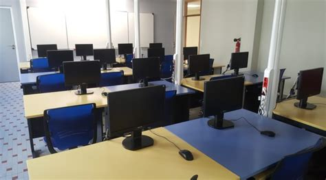

Le métier
Développeur informatique
Les études
Avant le BAC
Études courtes
Études longues
Évolutions possibles
Travailler dans dans tous les domaines
Apprendres de nouveaux languages de code
devenir le plus riche du monde ;)
Autre
Plan du "site"
Références
Accueil
Avant le BAC

BAC professionel
CIEL
:
Il est accessible après
3 années de formation
. Il se prépare
après la classe de 3e
. On notera qu’un tiers du volume d’heures d’enseignement est consacré aux matières professionnelles.
Le baccalauréat
CIEL
développe des activités dans les secteurs suivants :
La cybersécurité
Mise en oeuvre de réseaux informatiques
Réalisation et maintenance de produits électroniques
Valorisation de la donnée
BAC technologique :
Après la seconde
, l'enseignement spécifique
"systèmes d'information et numérique"
de la terminale
STI2D
est accessible après les spécialités
"innovation technologique"
,
"ingénierie et développement durable (I2D)"
de première
STI2D
.
BAC général :
Pour devenir développeur, on choisira la spécialté
Numérique
.
Nombre d'heures d'enseignement par semaine :
4
heures
en
première
et
6
heures
en
terminale
.